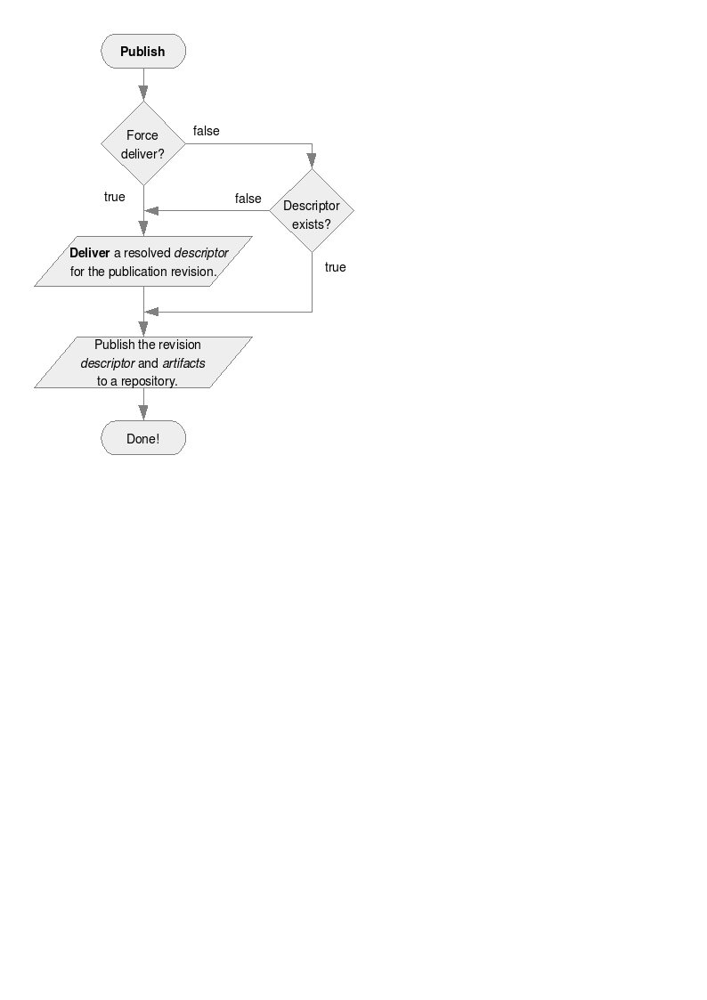

Publishes the current module's <a href="../ivyfile/publications.html">artifacts</a> and the <a href="../ivyfile.html#resolved">resolved descriptor</a> (delivered ivy file). This task is meant to publish the current module descriptor together with its declared publication artifacts to a repository. All the artifacts must have been created <em>before</em> calling this task. It does not create the artifacts themselves, but expects to find them at the location indicated by the artifacts pattern. The target repository is given through the name of a resolver declared in current ivy settings. See [[settings]] for details about resolver supporting artifact publishing. It also publishes the delivered ivy file (except if you don't want), and even deliver it, if it has not been done with a previous deliver call or if forcedeliver is set to true. That's why this task takes some parameters useful only for delivery. See the illustration below: <p></p> <span class="since">since 1.4.1</span> The source artifact pattern can be specified either as an attribute on the task (artifactspattern) or using a list of nested artifacts element (see examples below). <table class="ant"> <thead> <tr><th class="ant-att">Attribute</th><th class="ant-desc">Description</th><th class="ant-req">Required</th></tr> </thead> <tbody> <tr><td>organisation</td><td>the name of the organisation of the module to publish</td><td>No. Defaults to ${ivy.organisation} or the last resolved module organisation.</td></tr> <tr><td>module</td><td>the name of the module to publish</td><td>No. Defaults to ${ivy.module} or the last resolved module name.</td></tr> <tr><td>revision</td><td>the revision of the module to publish and also the published revision unless pubrevision is set</td><td>No. Defaults to ${ivy.revision} or the last resolve module revision.</td></tr> <tr><td>artifactspattern</td><td>the pattern to use to find artifacts to publish</td> <td>No. Defaults to ${ivy.publish.src.artifacts.pattern}</td></tr> <tr><td>resolver</td><td>the name of the resolver to use for publication</td> <td>Yes</td></tr> <tr><td>pubrevision</td><td>the revision to use for the publication</td> <td>No. Defaults to the ${ivy.deliver.revision}</td></tr> <tr><td>pubbranch</td><td>the branch to use for the publication</td> <td>No. Defaults to the ${ivy.deliver.branch}</td></tr> <tr><td>forcedeliver</td><td>true to force the implicit call to deliver, false to do it only if the ivy file to publish doesn't exist yet <span class="since">(since 1.4)</span></td> <td>No. Defaults to false</td></tr> <tr><td>update</td><td>true to update ivy file metadata (revision, branch, publication date and status) before publishing, false otherwise. This is usually not necessary when using deliver before publish.</td> <td>No. Defaults to false</td></tr> <tr><td>merge</td><td>if this descriptor <a href="../ivyfile/extends.html">extends</a> a parent, merge the inherited information directly into this descriptor on publish. The <i>extends</i> element itself will be commented out in the published descriptor. <span class="since">(since 2.2)</span></td> <td>No. Defaults to true</tr> <tr><td>validate</td><td>true to force ivy files validation against ivy.xsd, false to force no validation</td> <td>No. Defaults to default ivy value (as configured in [[settings settings file]])</td></tr> <tr><td>replacedynamicrev</td><td>true to replace dynamic revisions by static ones in the delivered file, false to avoid this replacement <span class="since">(since 1.3)</span></td> <td>No. Defaults to true</td></tr> <tr><td>publishivy</td><td>True to publish delivered ivy file, false otherwise</td> <td>No. Defaults to true</td></tr> <tr><td>conf</td><td>A comma separated list of configurations to publish <span class="since">(since 1.4.1)</span>. Accepts wildcards <span class="since">(since 2.2)</span>.</td> <td>No. Defaults to all configurations</td></tr> <tr><td>overwrite</td><td>True to overwrite files in repository if the revision already exist, false to let it as is</td> <td>No. Defaults to false</td></tr> <tr><td>warnonmissing</td><td>True to warn when artifacts to be published are missing</td> <td>No. Defaults to true</td></tr> <tr><td>haltonmissing</td><td>True to halt build when artifacts to be published are missing</td> <td>No. Defaults to true</td></tr> <tr><td>srcivypattern</td><td>the pattern to use to find ivy file to publish, and even deliver if necessary <span class="since">(since 1.2)</span></td> <td>No. Defaults to the value of artifactspattern</td></tr> <tr><td>pubdate</td><td>the publication date to use for the delivery, if necessary. This date should be either 'now', or a date given with the following pattern: yyyyMMddHHmmss</td> <td>No. Defaults to 'now'</td></tr> <tr><td>status</td><td>the status to use for the delivery, if necessary</td> <td>No. Defaults to ${ivy.status}</td></tr> <tr><td>delivertarget</td><td>the target to call for recursive delivery</td> <td>No. No recursive delivery is done by default</td></tr> <tr><td>settingsRef</td><td>A reference to the ivy settings that must be used by this task <span class="since">(since 2.0)</span></td><td>No, 'ivy.instance' is taken by default.</td></tr></tbody> </table> <h1>Child elements</h1> <table class="ivy-children"> <thead> <tr><th class="ivy-chld">Element</th><th class="ivy-chld-desc">Description</th><th class="ivy-chld-card">Cardinality</th></tr> </thead> <tbody> <tr><td>artifact</td> <td>Describe additional artifacts to publish<br/>These elements can have any attribute: standard artifact attributes and (since 2.2) extra attributes are supported.</td> <td>0..n</td></tr> <tr><td>artifacts</td> <td>Specify the pattern used to find the artifact.<br/>These elements have a <i>pattern</i> attribute containing the pattern used to find the artifact.</td> <td>0..n</td></tr> </tbody> </table> <h1>Examples</h1> <code type="xml"> <ivy:publish resolver="local" pubrevision="1.0"> <artifacts pattern="build/artifacts/jars/[artifact].[ext]" /> <artifacts pattern="build/artifacts/zips/[artifact].[ext]" /> </ivy:publish> </code> Publishes the last resolved module in the local resolver with revision 1.0, looking for artifacts in directories <i>build/artifacts/jars</i> and <i>build/artifacts/zips</i>.